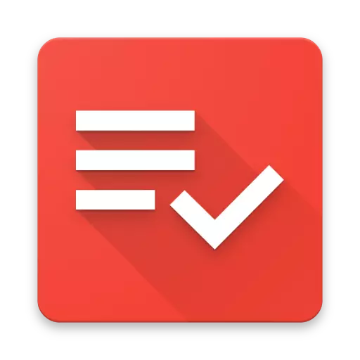

만들었다, 버킷리스트! 카드 위에 마우스를 올리면 뒤집히고, 이야기가 나옵니다.
달성은 카드의 네모칸이나 업적 칭호를 누르면 됩니다. 카드 뒷면에서 달성 · 포기 · 삭제도 고를 수 있고, 지운 항목은 오른쪽 위 관리에서 되살릴 수 있습니다.
항목마다 업적 칭호가 하나씩 붙어 있습니다. 달성하면 회색 실루엣이 색으로 채워집니다. 위쪽 Lv. 배지는 달성 개수로 오르는 전체 칭호입니다.
달성·삭제·추가 기록은 이 브라우저에만 저장됩니다. 기록을 옮기려면 내보내기를 쓰세요. 항목 자체를 늘리려면 data/bucket.js 를 고치면 됩니다.